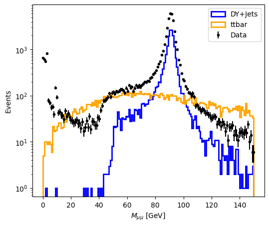
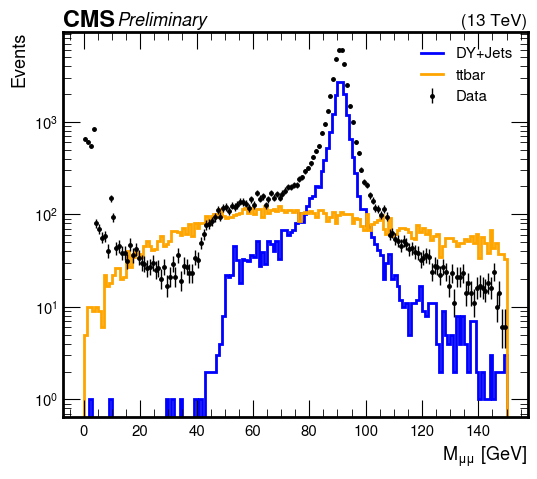
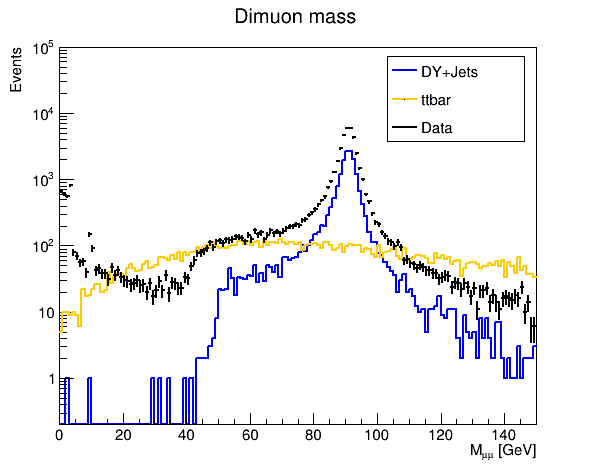

Plotting with matplotlib, mplhep, pyROOT¶
In this demo we use a generic dimuon analysis example with 3 datasets - Data, Drell-Yan, and TTbar. Only events with exactly two opposite-sign muons are selected, some event selections are applied, and dimuon pairs are constructed. The data is provided in the Pandas DataFrames format.
from submodule.event_selection import load_events
sources = ["data", "ttbar", "dy"]
server = "file:/depot/cms/purdue-af/demos/"
dimuon_mass = {}
# Load datasets
for src in sources:
df = load_events(f"{server}/{src}.root")
dimuon_mass[src] = df["dimuon_mass"]
Below are three examples of plotting the dimuon mass distribution (event weights are not applied):
matplotlibscikit-hep/mplheppyROOT
Plotting using Matplotlib¶
import matplotlib.pyplot as plt
import numpy as np
plt.figure(figsize=(6,5))
plt.hist(dimuon_mass["dy"], bins=150, range=(0, 150), histtype='step',linewidth=2, color='blue', label='DY+Jets')
plt.hist(dimuon_mass["ttbar"], bins=150, range=(0, 150), histtype='step',linewidth=2, color='orange', label='ttbar')
n, bins, patches = plt.hist(dimuon_mass["data"], bins=150, range=(0, 150), histtype='step',linewidth=0 )
errory = np.sqrt(n)
plt.errorbar(np.linspace(0,150,150), n,yerr= errory, fmt='o', markersize=3, color='k', label='Data')
plt.xlabel('$M_{\mu\mu}$ [GeV]')
plt.ylabel('Events')
plt.yscale('log')
plt.legend()
#plt.savefig(f"dimuon_mass.pdf")
plt.show()
plt.clf()

<Figure size 640x480 with 0 Axes>
Plotting using mplhep¶
import matplotlib.pyplot as plt
import mplhep as hep
import numpy as np
# CMS plot style
style = hep.style.CMS
style["font.size"] = 13
plt.style.use(style)
plt.figure(figsize=(6,5))
hists = {}
for src in ["dy", "ttbar", "data"]:
hists[src], bins = np.histogram(dimuon_mass[src], bins=150, range=(0,150))
hep.histplot(hists["dy"], bins=bins, histtype='step',linewidth=2, color='blue', label='DY+Jets')
hep.histplot(hists["ttbar"], bins=bins, histtype='step',linewidth=2, color='orange', label='ttbar')
hep.histplot(hists["data"], bins=bins, histtype='errorbar',linewidth=0, markersize=5, color='black', label='Data')
# "CMS Preliminary" label
hep.cms.label(loc=0, label="Preliminary", data=True)
plt.xlabel('$M_{\mu\mu}$ [GeV]')
plt.ylabel('Events')
plt.yscale('log')
plt.legend()
#plt.savefig(f"dimuon_mass.pdf")
plt.show()
plt.clf()

<Figure size 1000x1000 with 0 Axes>
Plotting using pyROOT¶
import ROOT
c1 = ROOT.TCanvas( 'c1', 'Dynamic Filling Example', 200, 10, 600, 500 )
c1.Clear()
c1.cd()
colors_ = {
"dy": 600,
"ttbar": 800,
"data": 1
}
h = {}
for src in ["dy", "ttbar", "data"]:
h[src] = ROOT.TH1F("dimuon_mass_"+src,"Dimuon mass",150,0,150)
for m in dimuon_mass[src]:
h[src].Fill(m)
h[src].SetLineColor(colors_[src])
h[src].SetLineWidth(2)
c1.Clear()
c1.SetLogy()
h["dy"].Draw()
h["ttbar"].Draw('same')
h["data"].Draw('lep,same')
h["dy"].SetStats(0)
h["dy"].GetYaxis().SetRangeUser(0.2, 1e5)
h["dy"].GetYaxis().SetTitle("Events")
h["dy"].GetXaxis().SetTitle("M_{#mu#mu} [GeV]")
legend = ROOT.TLegend(0.65, 0.70, 0.88, 0.88)
legend.SetTextSize(0.035)
legend.AddEntry(h["dy"],"DY+Jets", "lp")
legend.AddEntry(h["ttbar"],"ttbar", "lp")
legend.AddEntry(h["data"],"Data", "lp")
legend.Draw()
c1.Modified()
c1.Update()
c1.Draw()
Welcome to JupyROOT 6.28/00
